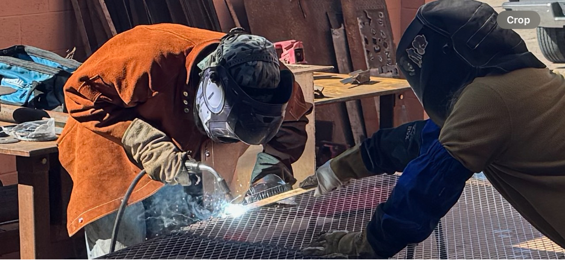

Welcome to the site where I share my favorite hobby of welding. In this site I will share some pictures with some tips that any new welder might appreciate.
Here is a picture of a welder welding a replacement screen for a dumpster lid. Note the welder not properly using his jacket. After this picture was taken, the welder was informed of the safety concern and continued on the project properly protected. (See tips below)

| Course Prefix | Course Title | Credits | Description |
|---|---|---|---|
| WELD 1110 | Introduction to Welding Fundamentals | 3 | Fundamental techniques, lab approach to shop safety, hand/portable power tools, and introduction to welding. |
| WELD 1120 | Print Reading for Welders | 3 | Study of industrial blueprints, welding symbols, and interpreting drawings. |
| WELD 1130 | SMAW (Shielded Metal Arc Welding) I | 6 | Theory and practical applications of structural plate welding, shop safety, torch cutting, and equipment setup. |
| WELD 1140 | GMAW-Gas Metal Arc Welding I | 3 | Introduction to MIG welding, machine setup, safety, and lab exercises on various joints in all positions. |
| WELD 1155 | GTAW-Gas Tungsten Arc Welding I | 3 | Basic course on TIG welding, equipment setup/safety, and welding structural joints to bend test standards. |
| WELD 1210 | Flux Cored Arc Welding | 3 | Principles of FCAW, safety, equipment setup, and practice on structural joints. |